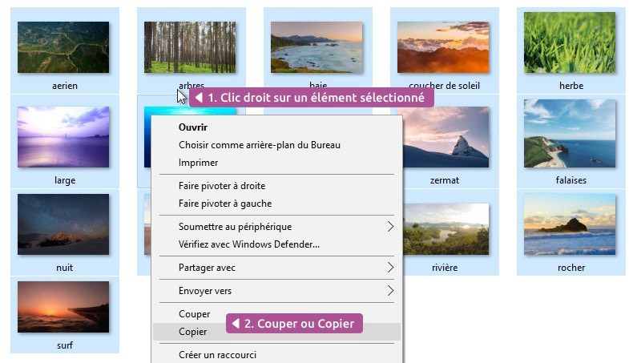

Et maintenant ? Vous avez votre sélection, il ne reste plus qu’à la copier ou la couper ! Pour cela, vous pouvez procéder de la même manière que le cours précédent Copier, couper, coller. Faites un clic droit sur l’un des éléments faisant partie de la sélection (et pas à côté au risque de tout annuler).

Copie multiple de fichiers
Dans les 2 cas : il vous suffira ensuite de faire un coller là où vous le souhaitez.